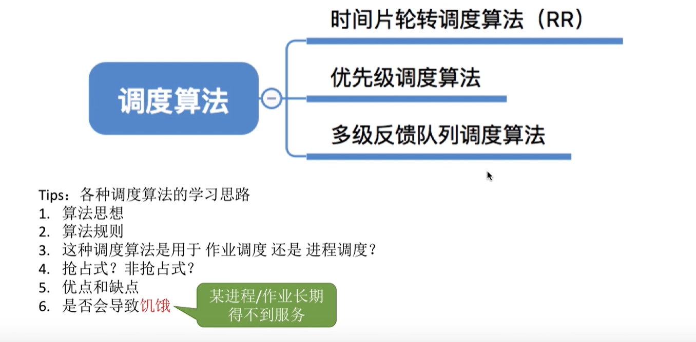

调度算法（十六）
本文最后更新于：8 天前
知识总览

时间片轮转调度
算法思想：公平地，轮流地为各个进程服务，让每个进程在一定时间间隔内得到响应。
算法规则：按照各进程到达就绪队列的顺序，轮流让各个进程执行一个时间片，若进程未在一个时间片内执行完毕，剥夺处理机，将进程重新放到就绪队列尾重新排队。
用于作业/进程调度：用于进程调度
是否可抢占：抢占式算法，通过时钟中断来通知cpu时间片已经到了。
优点：公平，响应快，适用于分时操作系统
缺点：由于高频率的进程切换，因此有一定的开销，不区分任务的紧急程度
是否会导致饥饿：不会
优先级调度算法
算法思想：随着计算机的发展，特别是实时操作系统的出现，越来越多的应用场景需要根据任务的紧急程度来决定处理顺序。
算法规则：为每个进程或者作业设置一个优先级，调度的时候选择优先级最高的来进行处理
用于作业/进程调度：可以用于进程、作业调度
是否可抢占：抢占式和非抢占式都有
优点：用优先级区分紧急程度、重要程度，适用于实时操作系统，可灵活地调整对各种作业/进程的偏好程度。
缺点：若源源不断的有高优先级进程到来，可能会导致饥饿
是否会导致饥饿：是
补充一下
就绪队列未必只有一个，可以按照不同的优先级来组织，另外，也可以把优先级高的进程排在更靠近队头的位置。根据优先级是否可以动态改变，可以分为静态优先级和动态优先级两种。
静态优先级：创建进程时确定，之后一直保持不变
动态优先级：创建进程时有一个初始值，之后会根据情况动态地调整优先级
通常
系统进程优先级高于用户进程
前台进程优先级高于后台进程
操作系统更偏好于IO进程，这里对应的是计算型进程（或者成为cpu繁忙型进程）
多级反馈队列调度算法
算法思想：对其他调度算法的折中权衡
算法规则：
1）设置多级优先就绪队列，各队列优先级从高到低，时间片从小到大
2）新的进程到达之后，先进入第一级队列，按照fcfs原则排队等待被分配时间片，若用完时间片进程还未结束，则进程进入下一级队尾，如果此时已经是在最下级的队列，则重新放回该队列的队尾。
3）只要第k级队列为空时，才会为k+1级队头的进程分配时间片
用于进程/作业调度：用于进程调度
是否可抢占：抢占式的算法
优点：对各类型进程相对公平，每个新到达的进程都可以很快得到响应，短进程只用较少的时间就可完成；不必实现估计进程的运行时间，可灵活的调整对各类进程的偏好程度。
是否会导致饥饿：会
知识回顾

本博客所有文章除特别声明外，均采用 CC BY-SA 4.0 协议 ，转载请注明出处！